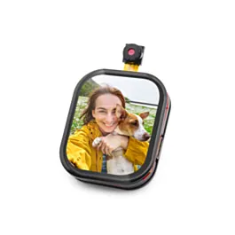
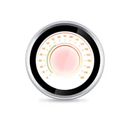
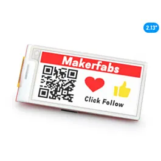
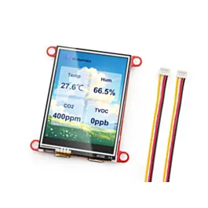
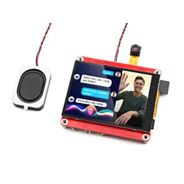
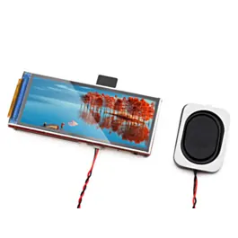
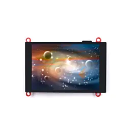
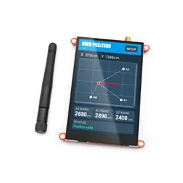
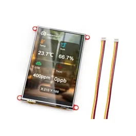
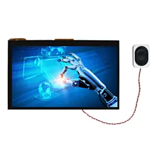

Makerfabs ESP32 display boards
10 boards – ESP32-S3. Filter and compare them in the interactive catalog →

MaTouch ESP32-S3 AMOLED AI CAMERA2.05" 368x448 · ESP32-S3 · 16MB flash, 8MB PSRAM
MaTouch ESP32-S3 Rotary IPS 2.1" ST77012.1" 480x480 IPS Capacitive touch · ESP32-S3 · 16MB flash, 8MB PSRAM
MaTouch ESP32-S3 2.13" Quad-Color Eink ePaper2.13" · ESP32-S3 · 16MB flash, 8MB PSRAM
MaTouch Lite ESP32-S3 SPI Resistive Touch 2.4" ST77892.4" 320x240 Resistive touch · ESP32-S3 · 16MB flash, 8MB PSRAM
MaTouch AI ESP32S3 2.8" TFT ST7789V2.8" 320x240 Capacitive touch · ESP32-S3 · 16MB flash
MaTouch ESP32-S3 Parallel TFT 3.16“ ST7701S3.16" 320x820 · ESP32-S3 · 16MB flash
MaTouch ESP32-S3 Parallel TFT 3.5" ILI94883.5" 480x320 TFT Capacitive touch · ESP32-S3 · 16MB flash, 8MB PSRAM
MaTouch ESP32-S3 MaUWB SPI TFT Touch 3.95" ST77963.95" Capacitive touch · ESP32-S3 · 16MB flash, 8MB PSRAM
MaTouch Lite ESP32-S3 SPI Resistive Touch 3.95" ST77963.95" 480x320 Resistive touch · ESP32-S3 · 16MB flash, 8MB PSRAM
MaTouch ESP32-S3 Parallel TFT with Touch 7“7" 800x480 IPS Capacitive touch · ESP32-S3 · 16MB flash, 8MB PSRAM